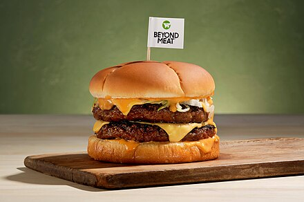

Vegan Hamburger

Description
This is a simple, yet tasty recipe for a good ol' fashioned american burger. Vegan style!
Ingredients
- Buns
- Beyond patties
- Olive oil
- Mayo
- Ketchup
- A1 steak seasoning
- Cheese slices
Steps
- Cook burgers for 4 minutes on each side in a pan filled with oil over medium heat.
- While burgers are cooking, season with A1 and place cheese slice on each patty.
- Toast buns
- Place cooked patties on buns
- Spread mayo
- Squirt ketchup